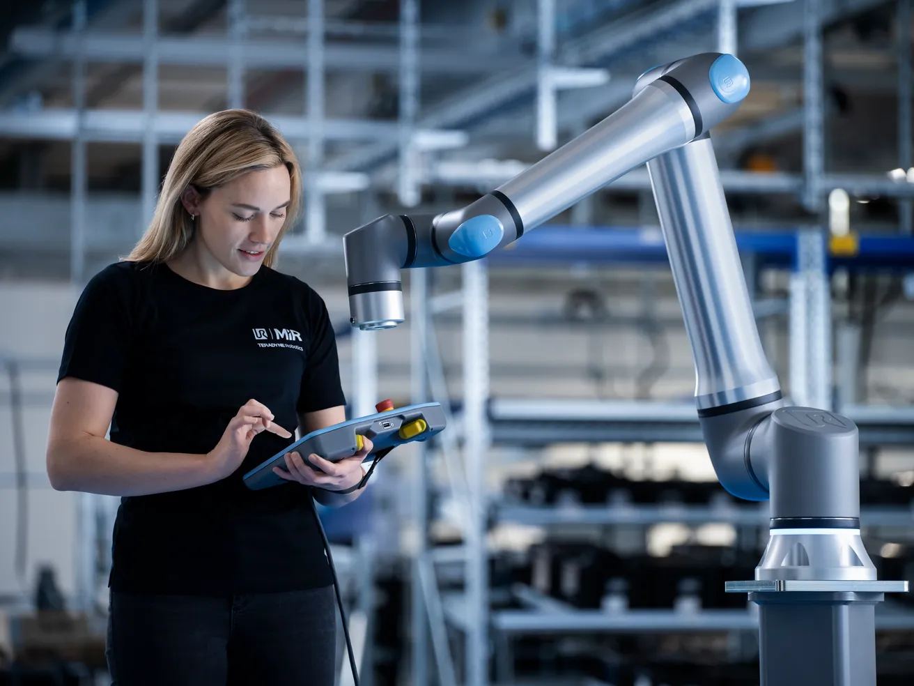

Universal Robots lance le UR15 : un pas de plus vers l’usine collaborative
Publié le 15 mai 2025

Le UR15 est le dernier-né de la série UR. Source : Universal Robots
Des cobots ? Pourquoi ?
Le secteur industriel, notamment en Europe, est confronté à une double pression : un manque chronique de main-d'œuvre qualifiée et une exigence croissante de production agile, personnalisée et rapide. Entre départs à la retraite, pénibilité des tâches et besoin de production continue, les chaînes de fabrication traditionnelles peinent à suivre. C’est dans ce contexte que les cobots émergent comme une réponse concrète et accessible.
Un cobot, ou robot collaboratif, est conçu pour travailler en toute sécurité aux côtés des humains. Contrairement aux robots industriels classiques, ils sont faciles à programmer, polyvalents, peu encombrants, et peuvent automatiser des tâches répétitives ou pénibles, tout en libérant les opérateurs humains pour des missions à plus forte valeur ajoutée. Leur rapidité d'intégration, leur flexibilité et leur coût d'entrée réduit en font une solution attractive, tant pour les PME que pour les grands groupes.
Le marché des cobots aujourd’hui
Le marché des robots collaboratifs connaît une croissance rapide, avec un taux de croissance annuel moyen supérieur à 30 %. En 2024, ils représentaient déjà plus de 15 % des ventes de robots industriels dans le monde. Des entreprises comme Universal Robots, Fanuc, KUKA, ABB ou Techman Robot dominent ce secteur.
Les cobots modernes peuvent soulever jusqu’à 25 kg, effectuer des assemblages de haute précision, du polissage, du pick & place, ou encore des contrôles qualité automatisés. Les tendances actuelles incluent la programmation simplifiée (souvent sans code), l’intégration de l’IA et de la vision industrielle, ainsi qu’une meilleure interopérabilité avec les outils existants.
UR15 : performance, vitesse et intelligence
Avec le lancement de l’UR15, Universal Robots franchit une nouvelle étape dans l’automatisation collaborative. Doté d’une charge utile de 15 kg (jusqu’à 17,5 kg en position poignet vers le bas) et d’une vitesse de 5 m/s au point TCP, l’UR15 permet un gain de temps de cycle allant jusqu’à 30 % sur les applications de pick-and-place comparé aux autres modèles UR.
Grâce à la technologie OptiMove, il améliore la fluidité des trajectoires et la précision des mouvements, même à haute vitesse et sous forte charge. « Nous repoussons les limites de l’automatisation collaborative depuis 20 ans. L’UR15 est conçu pour fonctionner à des vitesses plus élevées avec la performance la plus fluide disponible aujourd’hui », déclare Tero Tolonen, Chief Product Officer chez Universal Robots.
Conçu pour les environnements exigeants comme l’automobile, la métallurgie, la mécanique de précision ou l’électronique, l’UR15 allie format compact (IP65), haute précision, et compatibilité avec les environnements difficiles. Il est également pensé pour s’intégrer avec des robots mobiles (AMR/AGV), facilitant la collaboration homme-robot mobile.
Un cobot taillé pour l’IA
Le UR15 est "AI-Ready" lui permettant de s’adapter à une grande variété de besoins. Source : Universal Robots
Mais surtout, l’UR15 est « AI-ready » : il fonctionne avec les logiciels PolyScope 5 et PolyScope X, et peut être enrichi avec l’UR AI Accelerator, une boîte à outils développée avec NVIDIA. Celle-ci s’appuie sur la plateforme Jetson AGX Orin et les bibliothèques Isaac CUDA pour créer des applications robotisées intelligentes.
« Aujourd’hui, l’avantage n’est plus seulement la productivité, mais l’adaptabilité. La vraie question, c’est : à quelle vitesse pouvez-vous changer ? », souligne Ujjwal Kumar, président du groupe Teradyne Robotics.
Malgré un contexte économique tendu, Universal Robots continue d’innover et de faire évoluer le marché, misant sur la vitesse, la précision, l’IA et l’interopérabilité comme moteurs de différenciation. L’UR15 est attendu pour juin 2025, tandis que les modèles UR7e et UR12e sont déjà disponibles.
« Nous ne construisons pas des cobots pour remplacer les humains », conclut Kumar. « Nous les construisons pour les soutenir, étendre ce qui est possible, et rendre le travail plus sûr, plus productif et plus significatif. »